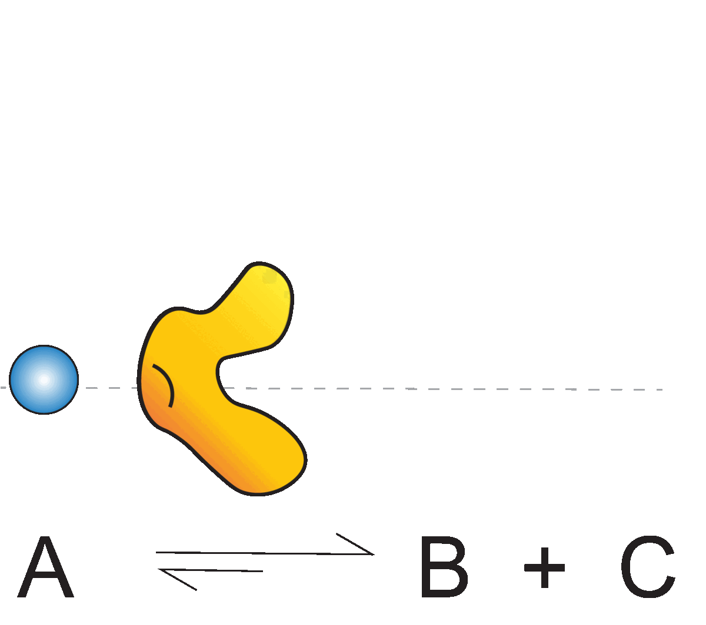
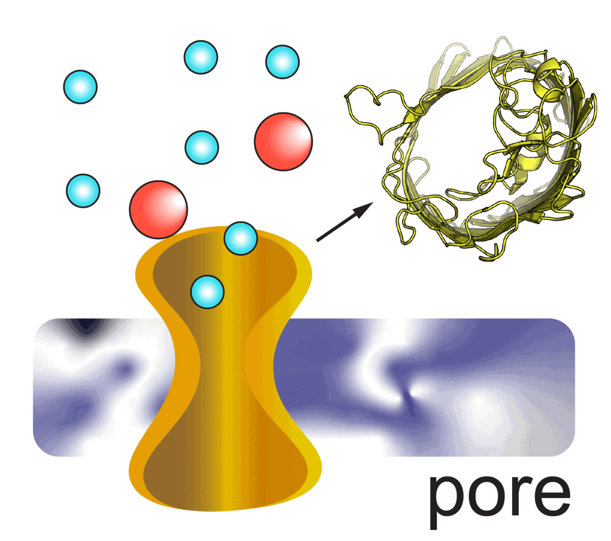
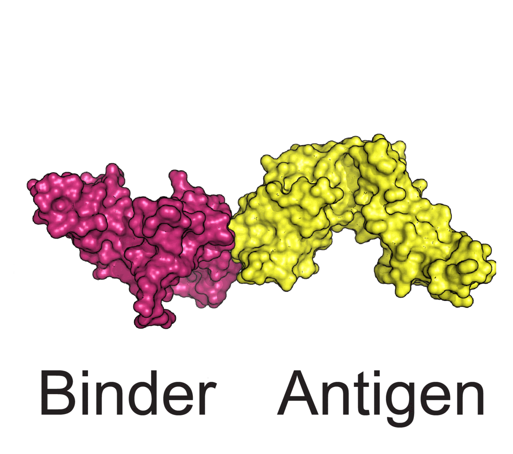
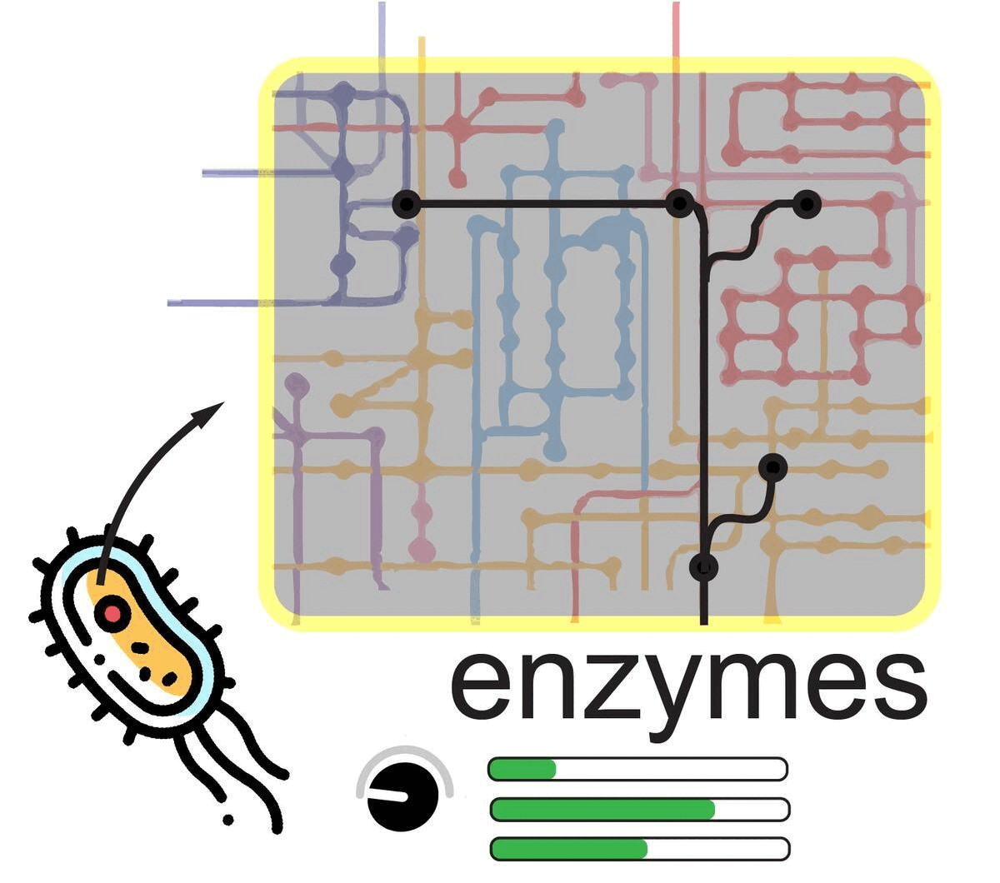

Natural proteins are linear, unidirectional biopolymers constructed by strategically adding one of the twenty possible amino acids after another such that they fold into a precise, non-clashing 3D-structure. Proteins come in various lengths, compositions, geometries, and functions. The structure of a protein offers grooves/ patches to fit/ attract small molecules (drugs, ions, etc.) or other proteins. The amino acid sequence dictates the structure and consequently the function that a protein can execute. While experiments can help us discern what the sequence, structure, and function of any protein are, predicting causal sequence-structure-function maps have largely remained elusive. We use a combination of deep-learning networks, physics-based molecular-mechanical models, and integer-optimization to predict amino acid transitions (mutations, insertions, or deletions) that will endow a protein with a desired functionality (with/ without significant structural change). We also predict protein activity given the pH, dielectric constant, polarity, and temperature of the surrounding solvent.
We modify known natural/ synthetic proteins or design from scratch proteins for - (a) enhanced/ altered catalysis, (b) precise molecular sieving of ions or solutes, (c) DNA/RNA-sequencing, (d) bio-based fuel cells, (e) biomedical applications and drug discovery, (f) structure-guided metabolic modeling, and (g) extracting specific rare-earth elements from electronic waste.
Enzyme design (biocatalysis)

We use latent space encoding of both enzymatic protein sequences and their geometry to predict mutations that functionalize them for intended (non-)reactive chemistry. We identify/ build stable, promiscuous proteins with low-level activity towards our intended biochemical conversion and subsequently predict mutations to crank-up a desired activity.
Applications : biosensor design, production of precursors for biofuel and drugs
Transporter design (separations)

We use pore-containing proteins as chassis to design precise molecular separation devices. Mutations on the exterior of the pore can be used to tune packing density/ efficiency of these pores in biomimetic membranes while inner pore walls are functionalized to endow them with different solute/ ion selectivities.
Applications : solute separation, bio-based fuel cell, genome sequencing
Antibody design (immunology)

We design libraries of humanized proteins with complementary shape and electrostatics to neutralize disease-causing antigenic proteins. We profile our predictions based on scoring metrics that account for dynamics of binding, binding affinity, and possibility of antigenic protein to mutate and escape based on evolutionary profiling of antigenic proteins.
Applications : antibody design, CDR3 loop engineering
Strain design (metabolic modeling)

We predict structures of entire proteome that participate in metabolic pathways. We build and estimate substrate binding and product leaving kinetic parameters using protein-small molecule interaction calculations. Structure-aware metabolic models provide biophysical insights about whole-cell behavior.
Applications : microbial engineering, biocontainment of abiotic amino acids